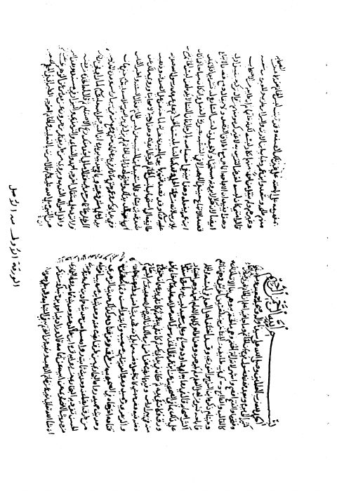

Downloads need an internet connection.
أحكام الخواتم وما يتعلق بها
Authors: ابن رجب الحنبلي
Editors: محمد بن حمود الوائلي
**▫️ العنوان: أحكام الخواتم وما يتعلق بها** ▪️ المؤلف: #عبد_الرحمن_البغدادي_بن_رجب_الحنبلي ▫️ المحقق: #محمد_بن_حمود_الوائلي ▪️ تاريخ النشر: 1407هـ 1987م ▫️ الطبعة: 1 ▪️ عدد الأجزاء: 2 ▫️ الصفحات: 305 ▪️ نوع الوعاء: #كتاب ▫️ التصنيف الرئيسي: #الحديث_وعلومه ▪️ التصنيف الفرعي: #باقي_مجموعات_الحديث ۪